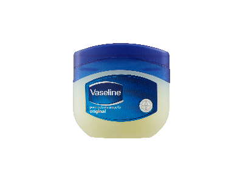
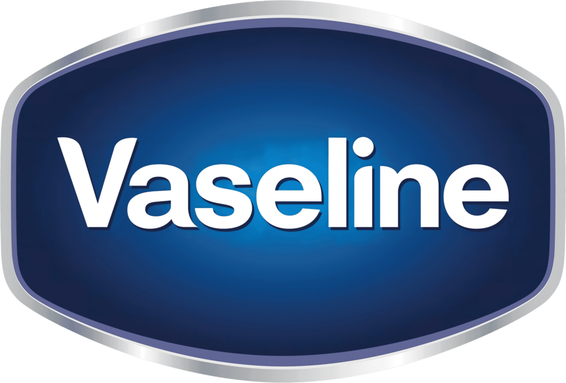

홈 > 브랜드 매거진 > 바세린
바세린
바세린(Vaseline)은 페트롤리움 젤리를 기반으로 한 미국의 스킨케어 브랜드이다.
산업 분야 뷰티·퍼스널케어 · 공개 등급 자료 기반 · 브랜드 평가 4.3 ★


한눈에 보는 브랜드
바세린(Vaseline)은 미국 화학자 로버트 체스브로(Robert Chesebrough)가 1872년 페트롤리엄 젤리 제조 공정을 특허받으며 출범한 보습 브랜드다. 정제된 순수 페트롤라툼을 기반으로 한 보호 젤리에서 시작해 로션·립케어로 제품군을 넓혔고, 현재는 유니레버(Unilever) 산하 브랜드로 편입돼 최근 12개월 매출이 약 10억 유로를 넘는 글로벌 스킨케어 브랜드로 자리잡았다.
브랜드 관점
경쟁 보습제와의 차이는 성분 구성에서 가장 뚜렷하다. 바세린은 정제된 페트롤라툼 100%의 단일 폐색(occlusive) 막으로 수분 증발을 막는 반면, 니베아는 미네랄 오일·글리세린 등을 배합한 크림 계열이고, 아쿠아퍼는 페트롤라툼 비중을 약 41%로 낮추고 라놀린·판테놀 등 보습 성분을 더해 더 부드럽고 흡습 기능까지 갖춘다.
이 단순함 덕에 바세린은 '페트롤리엄 젤리'의 대명사가 됐고, 낮은 가격과 약국·대형마트 어디서나 구할 수 있는 접근성으로 대중적 보습 표준으로 굳었다. 최근에는 글루타티온·히알루론산을 결합한 글루타-하이아 같은 더모케어·미백 라인으로 확장하며, 단순 보호제에서 기능성 스킨케어로 영역을 넓히는 점이 함의다.
한국에서는 1985년 애경을 통해 처음 들어와 겨울철 보습제로 친숙하다.
시작과 성장
창업자 체스브로는 1859년경 펜실베이니아 타이터스빌(Titusville) 유전을 찾았다가, 시추 펌프에 들러붙어 주기적으로 긁어내야 하던 '로드 왁스(rod wax)'라는 석유 부산물을 발견했다. 현장 인부들이 이 잔여물을 베이거나 덴 상처에 발라 쓰는 모습을 보고, 그는 이를 숯으로 여과·정제해 맑은 젤리로 만드는 공정을 개발했다.
1872년 미국 특허(제127,568호)를 받고 '바세린'이라는 상표를 붙였는데, 이름은 물을 뜻하는 독일어와 기름을 뜻하는 그리스어를 합친 것으로 알려진다. 그는 군중 앞에서 자기 피부를 불이나 산으로 다치게 한 뒤 젤리를 발라 보이는 자가실험식 시연으로 제품을 알렸고, 1874년 무렵 하루 천여 병이 팔렸다.
1875년 체스브로 제조회사를 세웠으며, 이후 여러 합병을 거쳐 최종적으로 유니레버로 편입됐다.
브랜드 아이덴티티
바세린은 상처 치유의 헤리티지에서 출발해 '바세린의 치유력(The Healing Power of Vaseline)'을 첫 글로벌 통합 포지셔닝으로 삼았고, 최근에는 '모든 피부에 건강한 피부를'이라는 미션으로 뷰티 영역까지 넓혔다. 로고는 타원형 바탕에 흰색 산세리프 워드마크를 얹은 형태이며, 핵심 색은 신뢰·전문성·보호를 상징하는 블루다.
타깃은 건조하고 민감한 피부를 가진 폭넓은 일상 소비자이며, 보이스는 과학적 근거에 기반하되 친근하고 실용적인 톤을 지향한다.
제품과 서비스
대표 제품은 100% 백색 페트롤라툼의 오리지널 힐링 젤리이며, 글리세린 등을 더한 인텐시브 케어 바디로션, 작은 통·스틱형 립 테라피로 이어진다. 여기에 클리니컬 케어와 글루타-하이아 미백 라인이 더해진다.
가격대는 품목·용량에 따라 다르지만 평균 1만 원대의 저가 보급형이며, 약국·드럭스토어·대형마트와 온라인 등 폭넓은 채널로 유통된다.
현재 상태
모회사는 영국계 생활용품 기업 유니레버(Unilever)로, 본사는 영국 런던에 있다. 바세린은 유니레버의 30개 파워 브랜드 중 하나로, 최근 12개월 매출이 약 10억 유로를 넘어섰고 2024년과 2025년 상반기에 각각 두 자릿수 물량 성장을 기록했다.
다만 한국 시장 내 단일 브랜드 매출과 점유율 등 세부 수치는 별도로 공개되지 않았다.
타임라인
BI/CI 변천사
함께 읽을 브랜드
 뷰티·퍼스널케어 · 편집 검수니베아
뷰티·퍼스널케어 · 편집 검수니베아니베아(NIVEA)는 1911년 독일 바이어스도르프(Beiersdorf)가 출시한 글로벌 스킨케어 브랜드다. 세계 최초의 안정적인 유중수(油中水) 유화 크림을 선보이...
 뷰티·퍼스널케어 · 자료 기반달바
뷰티·퍼스널케어 · 자료 기반달바달바(d'Alba)는 달바글로벌이 전개하는 대한민국의 프리미엄 비건 스킨케어 브랜드다. 2016년 론칭했으며 화이트 트러플 성분의 미스트 세럼으로 글로벌 베스트셀러를...
 뷰티·퍼스널케어 · 자료 기반라운드랩
뷰티·퍼스널케어 · 자료 기반라운드랩라운드랩(ROUND LAB)은 서린컴퍼니가 2017년 선보인 대한민국의 저자극 스킨케어 브랜드다. '1025 독도 토너' 등 순한 기초 라인으로 알려진 클린 뷰티 브...
 뷰티·퍼스널케어 · 자료 기반설화수
뷰티·퍼스널케어 · 자료 기반설화수설화수(Sulwhasoo)는 아모레퍼시픽이 1997년 론칭한 대한민국의 한방 럭셔리 스킨케어 브랜드다. 한방 원료와 프리미엄 포지셔닝으로 아모레퍼시픽을 대표하는 럭셔...
 뷰티·퍼스널케어 · 편집 검수도브
뷰티·퍼스널케어 · 편집 검수도브도브(Dove)는 유니레버가 1957년 출시한 비누·바디케어 퍼스널케어 브랜드이다.
 뷰티·퍼스널케어 · 자료 기반코스알엑스
뷰티·퍼스널케어 · 자료 기반코스알엑스코스알엑스(COSRX)는 2013년 설립된 한국의 민감성 피부용 스킨케어 브랜드로, 현재 아모레퍼시픽 자회사다.
 뷰티·퍼스널케어 · 자료 기반아누아
뷰티·퍼스널케어 · 자료 기반아누아아누아(Anua)는 더파운더즈가 전개하는 대한민국의 저자극 스킨케어 브랜드다. 어성초를 핵심 성분으로 한 진정 토너로 미국·일본 등에서 인기를 얻은 K-뷰티 브랜드다...
 뷰티·퍼스널케어 · 매거진 완성러쉬
뷰티·퍼스널케어 · 매거진 완성러쉬러쉬는 영국의 뷰티·퍼스널케어 브랜드로, 성분, 사용감, 패키지, 이미지 언어가 구매 판단에 직접 연결되는 영역입니다.